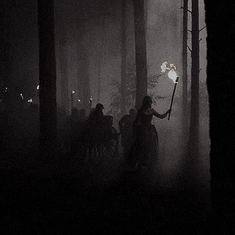

Hunting horns close in. Aldric sends runners into the rain while Brann takes his place beside you.
Act II summary: Brann remains loyal and your cause enters Act III in stronger condition.
Theme
Act II - Final Scene

Hunting horns close in. Aldric sends runners into the rain while Brann takes his place beside you.
Act II summary: Brann remains loyal and your cause enters Act III in stronger condition.